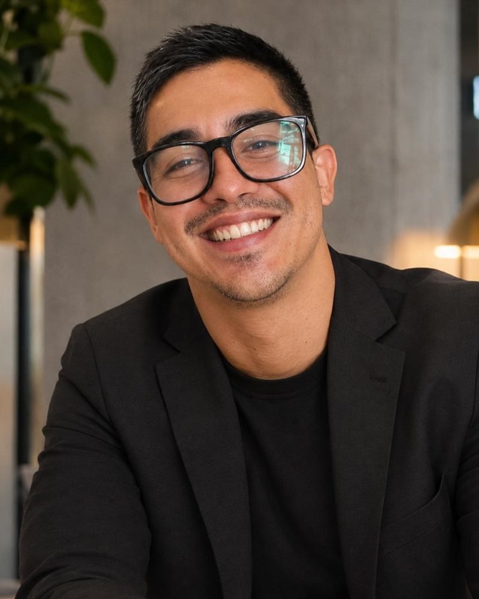

12.05° S · 77.04° OLima, Perú
Víctor Guardia Política pública basada en evidencia
Politólogo. Diseño e implemento políticas públicas a partir de la evidencia, para lograr cambios tangibles en la vida de las poblaciones más vulnerables.
Perfil
Perfil

Llevo más de diez años trabajando donde la política pública se encuentra con la realidad: en ministerios, en gobiernos regionales y locales y en el territorio.
He diseñado y acompañado intervenciones de salud, desarrollo infantil, protección social y prevención de la violencia, siempre con la misma pregunta: ¿está llegando el servicio a quien más lo necesita y está cambiando algo en su vida? Para responderla uso datos. Defino indicadores, reviso su calidad, encuentro brechas y las convierto en propuestas de mejora que los equipos pueden aplicar.
Mi experiencia combina el Estado peruano (MIDIS, MINSA, INABIF, SERVIR) con la cooperación internacional (UNESCO, GIZ, Naciones Unidas) y el sector privado. Hoy fortalezco capacidades en gestión y presupuesto por resultados, y amplío mis herramientas con ciencia de datos para que las decisiones públicas se apoyen en mejor evidencia.
- Asistencia técnica subnacional
- Seguimiento de metas e indicadores
- Protección social y salud pública
- Políticas basadas en evidencia
- Articulación intergubernamental
- Gestión de proyectos
Trayectoria · 2013–2026
Trece años dentro y junto al Estado
Ministerios, cooperación internacional y trabajo de campo con comunidades. Recorre cada etapa, de UNESCO en 2013 a hoy, y mira qué hice en cada una.
1/11
Formación · 2012–2027
Estudios y especialización
De la ciencia política a la ciencia de datos: una formación que sigue creciendo.
- 2012 · BarcelonaLicenciatura en Ciencias Políticas y de la AdministraciónUniversidad Autónoma de Barcelona
- 2014 · LimaIV Diplomado en Relaciones InternacionalesAcademia Diplomática del Perú
- 2016 · LimaPrograma de Gobernabilidad, Gerencia Política y Gestión PúblicaPontificia Universidad Católica del Perú
- En curso · termina en 2027Diplomatura de Especialización en Ciencia de Datos para las Ciencias Sociales y Gestión PúblicaPontificia Universidad Católica del Perú
Proyectos de datos
Preguntas que respondí con evidencia
Cada proyecto parte de una pregunta concreta y termina en algo que se puede usar: una metodología, una app, un dashboard o un reel.
1/8
Sobre mí
Fuera del trabajo
Me gusta viajar, la fotografía, las artes marciales, los rompecabezas y los juegos de mesa y de rol.
- Viajar34 países en tres continentes
- FotografíaLugares y personas de cada viaje
- Artes marcialesDisciplina y constancia
- RompecabezasPieza por pieza, como los datos
- Juegos de mesa y de rolEstrategia e historias en grupo